第 3 章 · 用户与权限
读懂那一串 rwx，是从「会用命令」走向「理解系统」的第一步
Windows 时代你可能从来不管"权限"，但 Linux 从出生起就是多用户（multi-user）操作系统——一台机器上同时住着很多人、跑着很多服务，权限就是他们之间的"围墙"。读懂 ls -l 那一串 rwx，是你从"会用命令"走向"理解系统"的第一步。
🎯 学习目标
学完本章，你应该能够：
- 建立 Linux 的多用户世界观：所有者、所属组、其他人；
- 会用
id、whoami查身份，用useradd+passwd建新用户； - 说清
su与sudo的区别，知道/etc/sudoers是谁的地盘； - 逐列读懂
ls -l的输出，背下rwx对文件与目录的不同含义； - 用八进制法与
ugoa±=符号法两种方式chmod，会chown/chgrp，理解umask； - 说清为什么
chmod -R 777是反模式（antipattern）。
🧠 核心概念

在学习站暂停、单步或重播。动画中的输入输出为教学示意，需用本章实验验证。


在学习站暂停、单步或重播。动画中的输入输出为教学示意，需用本章实验验证。

多用户世界观
Linux 里每个使用者都是一个用户（User），用户可以归入组（Group）；每个文件都登记着三个归属问题：谁的所有者（Owner）？哪个组（Group）？其他人（Others）怎么办？
还有一个超然的存在：root，UID 恒为 0，能越过一切权限检查。日常干活用普通账号，需要时借 root 的力，这才是安全姿势。
对任意一个文件，权限被切成三组、每组三位：
graph TD
F["文件 notes.txt<br/>- rw- r-- r--"] --> U["u 所有者 alice<br/>rw- 可读写"]
F --> G["g 所属组 dev<br/>r-- 只能读"]
F --> O["o 其他人<br/>r-- 只能读"]
F --> T["第 1 位是类型<br/>- 普通文件 d 目录 l 软链接"]
身份三件套：whoami / id / groups
$ whoami
alice
$ id
uid=1000(alice) gid=1000(alice) groups=1000(alice),27(sudo)
$ groups
alice sudoid 一条顶三样：UID（用户号）、GID（组号）、所在组列表。上面 sudo 组的存在，意味着 alice 有资格用 sudo。
再看一眼"户口本" /etc/passwd——每个用户占一行，冒号分隔七个字段：
| 字段 | 示例值 | 含义 |
|---|---|---|
| 1 | alice | 用户名 |
| 2 | x | 密码占位符（真密码在 /etc/shadow） |
| 3 | 1000 | UID（用户号） |
| 4 | 1000 | GID（初始组号） |
| 5 | Alice Zhang,,, | 备注全名（GECOS） |
| 6 | /home/alice | 家目录 |
| 7 | /bin/bash | 登录 Shell |
创建用户：useradd + passwd
sudo useradd -m -s /bin/bash bob # -m 建家目录，-s 指定登录 Shell
sudo passwd bob # 给 bob 设置密码New password:
Retype new password:
passwd: password updated successfully💡 发行版注记：Debian/Ubuntu 还有个交互式向导
sudo adduser bob，会顺手建家目录、问密码，更适合新手；Fedora/RHEL 的useradd默认就建家目录。
想给 bob 发"管理员资格证"，把他加进 sudo 组：
sudo usermod -aG sudo bob # -a 追加，-G 指定组；-a 不能丢，否则 bob 会被踢出其他组
groups bob # bob : bob sudobob 重新登录后就能 sudo 了——这也是第 3 列"所在组"的实际用途。
su vs sudo：借权的两种姿势
su - bob # 切换身份为 bob（- 表示连同环境变量一起切）
exit # 退出，回到 alice
sudo apt update # 只以 root 身份执行这一条命令
sudo -i # 临时获得一个 root Shell（用完记得 exit）| 对比项 | su | sudo |
|---|---|---|
| 做什么 | 彻底切换成另一个用户（默认 root） | 以其他身份执行单条命令 |
| 输谁的密码 | 目标用户（root）的密码 | 自己的密码 |
| 权限范围 | 切过去之后全程 root | 只限被放行的命令 |
| 推荐度 | 长期借用时用 | 日常首选，可审计 |
谁有资格用 sudo，由 /etc/sudoers 文件决定——这个文件必须用 sudo visudo 编辑（自带语法检查），直接用普通编辑器改写坏了会把自己锁在管理员门外。
ls -l 输出逐列解读
$ ls -l
total 8
-rw-r--r-- 1 alice dev 1024 Oct 6 10:00 notes.txt
drwxr-xr-x 3 alice dev 4096 Oct 6 10:01 scripts
lrwxrwxrwx 1 alice dev 9 Oct 6 10:02 latest.txt -> notes.txt| 列 | 示例值（第 1 行） | 含义 |
|---|---|---|
| 1 | -rw-r--r-- | 类型 + 三组权限：- 普通文件；rw- 所有者；r-- 组；r-- 其他人 |
| 2 | 1 | 硬链接数 |
| 3 | alice | 所有者（Owner） |
| 4 | dev | 所属组（Group） |
| 5 | 1024 | 大小（字节） |
| 6~7 | Oct 6 10:00 | 最后修改时间 |
| 8 | notes.txt | 文件名（软链接会跟 -> 指向目标） |
rwx 对文件与目录，含义不一样
这是新手最容易懵的点——同一串 rwx，放在文件上和放在目录上是两套含义：
| 位 | 对文件 | 对目录 |
|---|---|---|
r（4，read） | 读取内容（cat、less） | 列出目录里有哪些文件名（ls） |
w（2，write） | 修改文件内容 | 在目录里新建 / 删除 / 改名文件 |
x（1，execute） | 把文件当程序执行（脚本、二进制） | 进入目录（cd），访问其中文件 |
两个推论值得背下来：目录只有 r 没有 x 时，只能"报菜名"却进不去；能否删除一个文件，取决于它所在目录的 w 权限，跟文件本身无关。
权限位到底长什么样？看这个动画最直观：

🛠 命令实操
chmod：改权限的两种写法
八进制法：r=4、w=2、x=1，每组三位相加得一个数字，三组拼三个数字。
rwx r-x r-- → 4+2+1 4+0+1 4+0+0 → 754chmod 644 notes.txt # rw-r--r--，配置文件的常见权限
chmod 755 deploy.sh # rwxr-xr-x，脚本/目录的常见权限
chmod 700 ~/.ssh # rwx------，私密目录只留给自己符号法：ugoa（所有者/组/其他人/所有人）+ +-=（加/减/恰好设为）+ rwx。
chmod u+x deploy.sh # 给所有者加执行权
chmod go-r notes.txt # 组和其他人去掉读权限
chmod a=r notes.txt # 所有人恰好可读，不多不少
chmod -R g+w scripts/ # -R 递归处理整个目录一张常用权限参照表，遇到场景直接对号入座：
| 权限 | 典型对象 | 场景 |
|---|---|---|
| 644 | 普通文件 | 配置、文本：自己可读写，别人只读 |
| 600 | 私密文件 | ~/.ssh/id_rsa 等密钥：只有自己能碰 |
| 755 | 目录与脚本 | 网页目录、Shell 脚本：人人可进可执行，只留自己写 |
| 700 | 私密目录 | ~/.ssh：仅本人可进入 |
| 777 | （几乎没有） | 反模式，见下方避坑指南 |
chown / chgrp：换主人
sudo chown bob report.txt # 换所有者
sudo chown bob:dev report.txt # 所有者和组一起换
sudo chgrp dev report.txt # 只换组chown/chgrp 涉及"改别人的东西"，普通用户只能对自己文件操作，跨归属要 sudo。
umask：新文件的"出厂默认权限"
umask 是掩码：从默认权限里减去（按位清除）掩码位，就是新建文件的权限。
$ umask
0002
$ touch fresh.txt && ls -l fresh.txt
-rw-rw-r-- 1 alice alice 0 Oct 6 10:30 fresh.txt演算：文件基数为 666、目录为 777；掩码 002 清掉"其他人"的 w，于是新文件 664、新目录 775。想让新文件更私密，就把 umask 027 写进 ~/.bashrc。
临时体验不同掩码（只影响当前会话，退出即恢复）：
$ umask 027
$ touch secret.txt && ls -l secret.txt
-rw-r----- 1 alice alice 0 Oct 6 10:31 secret.txt特殊位：SUID、SGID 与 sticky
rwx 之外，还有三个「特殊位」——它们出现在 ls -l 的第一列里，位置很容易被忽略：
| 位 | 显示 | 对文件 | 对目录 |
|---|---|---|---|
| SUID | 属主 x 位置变 s（如 -rwsr-xr-x） | 执行时临时获得属主身份 | 无意义 |
| SGID | 属组 x 位置变 s（如 -rwxr-sr-x） | 执行时获得属组身份 | 新文件继承目录的组 |
| sticky | 其他 x 位置变 t（如 drwxrwxrwt） | 无意义 | 只有属主能删自己的文件 |
# 观察经典例子：passwd 为什么需要 SUID
ls -l /usr/bin/passwd
# -rwsr-xr-x 1 root root … ← s 表示 SUID
# /tmp 的 sticky 位：谁都能建文件，但删不了别人的
ls -ld /tmp
# drwxrwxrwt … ← 最后的 t为什么 passwd 需要 SUID？ 改密码要写受保护的 /etc/shadow，普通用户没权限。SUID 让它在执行瞬间以 root 身份运行——但程序内部只做「改密码」这一件事。SUID 是一把需要极其谨慎使用的钥匙：自制的 SUID 程序如果检查不严，就是提权漏洞。
为什么 /tmp 需要 sticky？ 它是全员可写的共享目录。没有 sticky 时，任何人都能删别人的临时文件；加上 sticky 后，「可写」与「可删」被分开了——这是共享目录的标准配置。
# SGID 目录：协作目录的常见写法
sudo mkdir -p /srv/team && sudo chgrp devs /srv/team && sudo chmod 2770 /srv/team
# 之后团队成员新建的文件会自动属于 devs 组，而不是各自的主组🔍 排查提示：用
find / -perm -4000 -type f 2>/dev/null可以列出系统中所有 SUID 程序——安全加固章节会用到这条命令。
权限之外的两层：ACL 与文件属性
九个位只能把权限分成「所有者 / 组 / 其他人」三类。只想让某一个人额外读写，又不想把他塞进组、更不该放开其他人时，用 ACL。
| 工具 | 解决什么 | 示例 |
|---|---|---|
getfacl / setfacl | 给单个用户或组追加规则，不动其他人类别 | setfacl -m u:bob:rw report.txt |
chattr / lsattr | 设置连 root 都要遵守的文件属性 | sudo chattr +i config.conf |
getfacl report.txt # 看现有规则
setfacl -m u:bob:rw report.txt # 只给 bob 读写
setfacl -x u:bob report.txt # 撤销这条规则
ls -l report.txt # 权限位末尾出现 + 号，表示带 ACLACL 里有一条容易忽略的 mask（getfacl 中显示为 mask::rw-）：它是所有 ACL 条目的生效上限。setfacl -m m::r report.txt 把上限收窄后，即使规则写着 rw，实际也只有 r。排查「明明给了权限却写不进去」时，先看 mask。
chattr +i 是更硬的一层：文件设为 immutable 后，root 也不能改、不能删，rm -rf 同样无效；lsattr 查看，chattr -i 解除。它适合保护关键配置，不适合当日常权限手段——忘了自己加过，会排查很久。该属性依赖文件系统支持（ext4/xfs 可用，overlay、部分容器文件系统不支持）。
💡 避坑指南
chmod -R 777是反模式：让全世界可读可写可执行，等于拆掉围墙，网页目录被篡改十有八九是它干的。正确姿势：目录755、文件644，归属不对用chown解决。x不要随手加：给普通文件加x没意义还危险；给目录加x反而是必须的，否则进不去。- 删不掉文件先看目录权限：权限报错时，检查的应是所在目录的
w位，而不是文件本身。 /etc/sudoers只用visudo碰：手改写坏语法，可能让所有管理员进不了 root。su与sudo -i用完记得exit：挂着 root Shell 干活，敲错一条命令的代价是系统级的。
✍️ 动手实验
实验 1：让权限围墙"看得见"
创建用户 bob，然后在 alice 家目录放一个仅自己可读的文件，切到 bob 试试访问，再把权限放开对比效果。
💡 参考解法（先自己试！）
sudo useradd -m -s /bin/bash bob
sudo passwd bob
echo "secret" > ~/secret.txt
chmod 600 ~/secret.txt # rw-------
su - bob # 输入 bob 的密码
cat /home/alice/secret.txt # → cat: /home/alice/secret.txt: Permission denied
exit
chmod 644 ~/secret.txt # 放开"其他人"的读权限
su - bob
cat /home/alice/secret.txt # → secret
exit第二次能读通了，因为 644 把 r 给了"其他人"。实验完记得 rm ~/secret.txt。
前提：家目录本身必须允许"其他人"穿过（
o+x）。用ls -ld ~确认是drwxr-xr-x；如果显示drwx------（部分发行版默认把家目录设成700），bob 连目录都进不去，第二次仍是Permission denied——那不是文件权限的问题，先把目录放开或用/tmp中转再对比。
实验 2：解释系统的"标准答案"
查看 /etc/passwd 和 /etc/shadow 的权限，用本章知识解释它们为何不同。
💡 参考解法（先自己试！）
ls -l /etc/passwd /etc/shadow-rw-r--r-- 1 root root 2789 Oct 6 09:00 /etc/passwd
-rw-r----- 1 root shadow 1290 Oct 6 09:00 /etc/shadow/etc/passwd 存的是"公开花名册"（用户名、Shell、家目录），无敏感信息，所以 644 人人可读；/etc/shadow 存加密后的密码，只有 root 可读写、shadow 组可读，普通用户连看都不行——这就是"最小权限原则"的教科书示例。
📺 推荐视频
- B 站 · 读懂 rwx 权限 — 韩顺平，P44，15 分 46 秒。用户管理与权限修改补充；命令以本教程当前环境说明为准。
- B 站 · 用户管理 — 韩顺平，P21，15 分 26 秒。用户管理与权限修改补充；命令以本教程当前环境说明为准。
- B 站 · 修改权限 — 韩顺平，P46，9 分 32 秒。用户管理与权限修改补充；命令以本教程当前环境说明为准。
- B 站 · 权限管理细读 — Java 基基，P37，23 分 24 秒。用户管理与权限修改补充；命令以本教程当前环境说明为准。

在学习站查看配套媒体 · 视频资料与核验说明。标题、作者和分 P 已核对，未逐条完成实播，播放限制以原站为准。
🎬 本章精讲
长视频把本章拆成「现象 → 机制 → 命令验证 → 坑 → 自测」，动画按相位放大，配逐字口播稿：
- M03 · chmod 644 之后，为什么连 cd 都进不去了 — 时间轴、口播稿与自测
成片在 video-out/lectures/perm/perm-wide.mp4（本地渲染，不入库），字幕 perm.srt。
✅ 自测清单
- 我能说出
ls -l前十个字符各代表什么 - 我能背出
rwx对文件和对目录的两套含义 - 我会用八进制法把权限改成
750，也会用符号法写g-w - 我知道
su和sudo的核心区别，以及/etc/sudoers该用visudo改 - 我能解释
umask 002下新建文件为什么是664 - 我能说清
chmod -R 777错在哪，并给出正确替代 - 我知道"能否删除文件"取决于目录的
w权限
🧭 知识连通
| 方向 | 内容 |
|---|---|
| 前置 | 文件与目录操作：知道文件在哪，才能谈谁能动它 |
| 本章产出 | rwx 与特殊位、用户组、sudo 借权、最小权限原则 |
| 后续用到 | 安全加固、家庭服务器共享目录、容器权限、给你自己写的脚本设权限 |
| 配套资源 | 权限与用户速查 · 错误索引（Permission denied / Operation not permitted） |
「Permission denied」是新手最常见的第一道墙——本章教你读懂它，而不是用 777 拆墙。
🔗 延伸阅读
- man7.org · Linux man-pages：
chmod(1)、chown(1)、credentials(7) - The Linux Documentation Project：Users & Groups 相关 HOWTO
- Arch Wiki · Users and groups：同类知识的高密度整理
- 鸟哥的 Linux 私房菜：权限篇讲解非常透彻
- 📝 巩固练习：01-基础篇练习